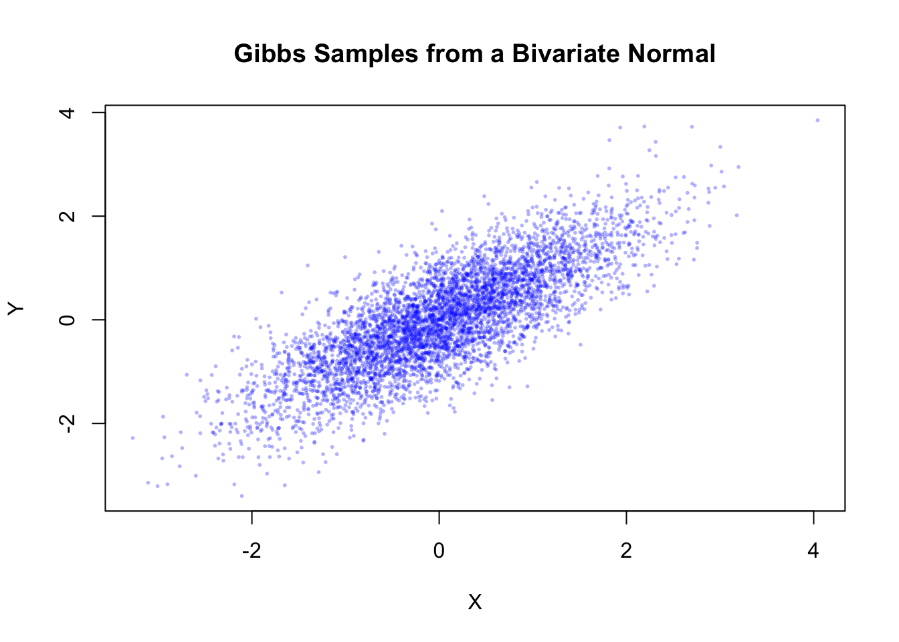
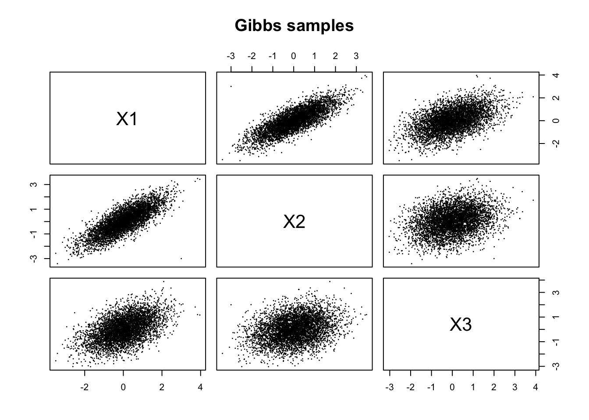
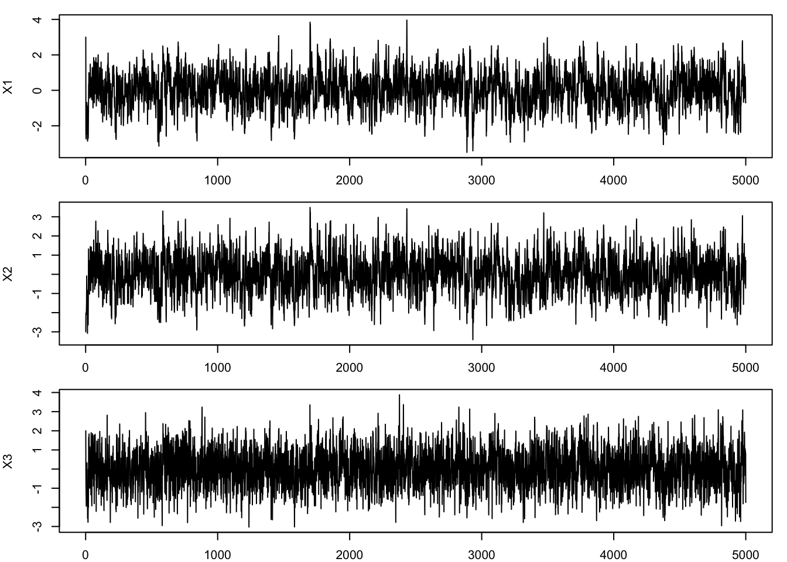
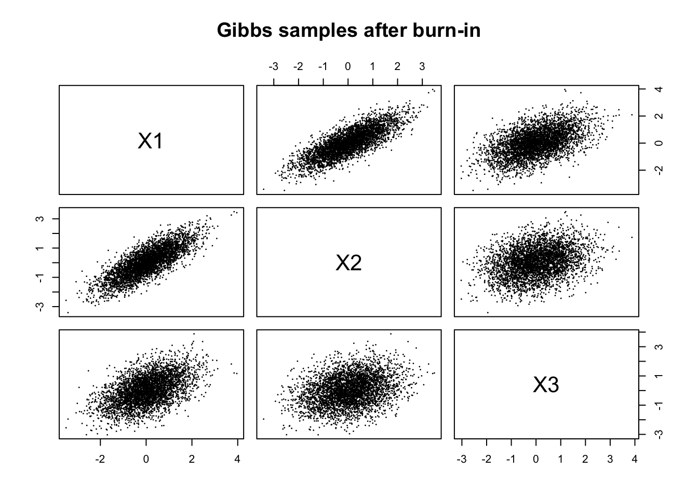
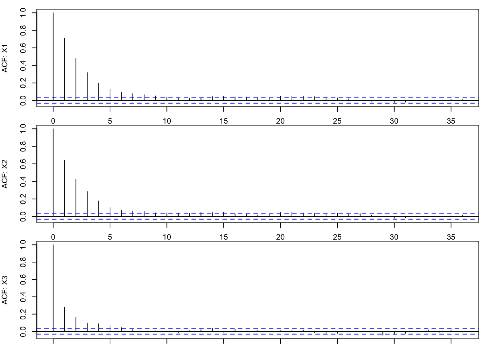

x1 <- rnorm(1, mean = 0.8 * (-3), sd = sqrt(0.36))
x1 <- round(x1, 2); x1[1] -2.94In the previous chapter, we saw how to use Monte Carlo simulation to estimate integrals. In this chapter, we will see how to use Markov Chain Monte Carlo (MCMC) methods to sample from complicated probability distributions. This is a powerful technique that is widely used in statistics, machine learning, and many other fields.
Specifically, we will focus on a MCMC algorithm: Gibbs sampling. We will also see how to use this algorithm to perform Bayesian inference, which is a powerful framework for statistical modeling and inference.
In many statistical applications, especially Bayesian inference, we are interested in sampling from a complicated multivariate distribution.
Suppose we wish to sample from the joint distribution
\[ p(x,y), \]
or more generally,
\[ p(x_1,x_2,\dots,x_d). \]
In practice, direct sampling (as in Multivariate Simulation) from the full joint distribution may be extremely difficult or even impossible.
However, the corresponding conditional distributions are often much easier to work with.
For example, we may know how to sample from
\[ p(x|y) \quad \text{and} \quad p(y|x), \]
even though sampling directly from \(p(x,y)\) is difficult.
The Gibbs sampler exploits this idea.
Instead of sampling all variables simultaneously, Gibbs sampling repeatedly samples each variable conditional on the current values of the others.
This produces a Markov chain whose long-run distribution converges to the desired target distribution.
Suppose we want to sample from a joint distribution
\[ p(x,y). \]
The Gibbs sampler alternates between the two conditional distributions:
The iterative updates are:
\[ x^{(t+1)} \sim p(x|y^{(t)}), \]
\[ y^{(t+1)} \sim p(y|x^{(t+1)}). \]
These updates are repeated many times.
The sequence of samples forms a Markov chain.
After sufficiently many iterations, the chain behaves as though it were sampling from the target joint distribution.
The Gibbs sampler constructs a Markov chain with the target distribution as its stationary distribution.
The key intuition is:
Unlike ordinary Monte Carlo simulation:
This dependence is the defining feature of Markov chain Monte Carlo (MCMC).
Suppose the target distribution is multivariate with \(d\) variables:
\[ p(x_1,x_2,\dots,x_d). \]
Step 1 — Choose initial values
Select starting values:
\[ x_1^{(0)},x_2^{(0)},\dots,x_d^{(0)}. \]
Step 2 — Sequential conditional updates
For iteration \(t=0,1,2,\dots\),
Update each variable one at a time:
\[ x_1^{(t+1)} \sim p(x_1|x_2^{(t)},x_3^{(t)},\dots,x_d^{(t)}), \]
\[ x_2^{(t+1)} \sim p(x_2|x_1^{(t+1)},x_3^{(t)},\dots,x_d^{(t)}), \]
and so on until
\[ x_d^{(t+1)} \sim p(x_d|x_1^{(t+1)},\dots,x_{d-1}^{(t+1)}). \]
The Gibbs sampler updates one variable at a time, conditional on the current values of all the other \(d−1\) variables.
Step 3 — Repeat
Repeat for many iterations.
The generated sequence approximates samples from the target distribution.
The Gibbs sampler is an example of a Markov process.
Recall from Stochastic Modelling chapter,
a Markov process depends only on the current state, not the full history.
In Gibbs sampling:
Thus, the Gibbs sampler naturally fits into the broader framework of stochastic processes and Markov chains.
Consider the bivariate normal distribution:
\[ \begin{pmatrix} X \\ Y \end{pmatrix} \sim N\left( \begin{pmatrix} 0 \\ 0 \end{pmatrix}, \begin{pmatrix} 1 & \rho \\ \rho & 1 \end{pmatrix} \right). \]
Suppose \(\rho = 0.8\). Use Gibbs sampling to generate samples from this distribution.
Step 0 — Identify conditional distributions
Recall from Multivariate Distribution, the joint density can be written as
\[ f(x,y)= \frac{1}{2\pi\sqrt{1-\rho^2}} \exp\left( -\frac{1}{2(1-\rho^2)} (x^2 - 2\rho xy + y^2) \right). \]
To obtain the conditional distribution of \(X\mid Y= y\), we can treat \(y\) as a constant and view the joint density as a function of \(x\) alone. This gives
\[ f(x|y) \propto \exp\left( -\frac{1}{2(1-\rho^2)} (x^2 - 2\rho xy) \right). \]
Now complete the square in \(x\):
\[ x^2 - 2\rho xy = (x-\rho y)^2 - \rho^2 y^2. \]
Substituting this into the exponent gives
\[ f(x|y) \propto \exp\left( -\frac{(x-\rho y)^2}{2(1-\rho^2)} \right). \]
This is the kernel of a normal distribution1 with mean \(\mathbb{E}[X|Y=y] = \rho y\) and variance \(\text{Var}(X|Y=y) = 1-\rho^2\).
Thus,
\[ \boxed{X|Y=y \sim N(\rho y,1-\rho^2)} \]
Similarly, \[ \boxed{Y|X=x \sim N(\rho x,1-\rho^2)} \]
The conditional distributions reveal several key properties of the bivariate normal distribution:
From this, we can write down the Gibbs sampling algorithm for this bivariate normal distribution:
Choose initial values \(X^{(0)}\) and \(Y^{(0)}\).
sample \(X\) given current \(Y\) and sample \(Y\) given updated \(X\): \[X^{(t+1)} \sim N(\rho Y^{(t)}, 1-\rho^2)\] \[Y^{(t+1)} \sim N(\rho X^{(t+1)}, 1-\rho^2)\]
repeat

Figure Figure 43.1 illustrates the Gibbs sampling mechanism for a bivariate distribution. Starting from an initial point \((x_0, y_0)\), the sampler first updates \(x\) conditional on the current value of \(y\). Then \(y\) is updated conditional on the newly updated \(x\). Repeating this alternating procedure generates a Markov chain that gradually explores the target joint distribution. Since only one coordinate is updated at a time, the Gibbs sampler typically moves through the state space in a zig-zag pattern.
From the setup, we have
\[ \rho = 0.8, \qquad 1-\rho^2 = 1-0.8^2 = 0.36. \]
Therefore, each conditional distribution has standard deviation
\[ \sqrt{1-\rho^2} = \sqrt{0.36} = 0.6. \]
Step 1 — Choose initial values
\[ X^{(0)} = 3, \qquad Y^{(0)} = -3. \]
Step 2 & 3 — Update variables and repeat
At iteration \(t=0\),
we first update \(X\) using the current value \(Y^{(0)}=-3\):
\[ X^{(1)} \sim N(0.8Y^{(0)},0.36) = N(-2.4,0.36). \]
Randomly draw a value from this distribution:
x1 <- rnorm(1, mean = 0.8 * (-3), sd = sqrt(0.36))
x1 <- round(x1, 2); x1[1] -2.94\(\therefore X^{(1)} = -2.94.\) Now update \(Y\) using the newly updated value \(X^{(1)}\):
\[ Y^{(1)} \sim N(0.8X^{(1)},0.36) = N(-2.352,0.36). \]
Randomly draw a value from this distribution:
y1 <- rnorm(1, mean = 0.8 * x1, sd = sqrt(0.36))
y1 <- round(y1, 2); y1[1] -2.48\(\therefore Y^{(1)} = -2.48.\) Thus, after the first iteration, we have
\[ \boxed{(X^{(1)},Y^{(1)}) = (-2.94,-2.48)}. \]
At iteration \(t=1\),
we repeat the same process. First update \(X\) using \(Y^{(1)}=-2.48\):
\[ X^{(2)} \sim N(0.8Y^{(1)},0.36) = N(-1.984,0.36). \]
Randomly draw a value from this distribution:
x2 <- rnorm(1, mean = 0.8 * y1, sd = sqrt(0.36))
x2 <- round(x2, 2); x2[1] -0.8\(\therefore X^{(2)} = -0.8.\) Now update \(Y\) using the newly updated value \(X^{(2)}\):
\[ Y^{(2)} \sim N(0.8X^{(2)},0.36) = N(-0.64,0.36) \]
Randomly draw a value from this distribution:
y2 <- rnorm(1, mean = 0.8 * x2, sd = sqrt(0.36))
y2 <- round(y2, 2); y2[1] -0.31Thus,
\[ \boxed{(X^{(2)},Y^{(2)})=(-0.8,-0.31)}. \]
By repeating this process for many iterations, we generate a sequence of samples that approximates the target bivariate normal distribution.
set.seed(1234)
n <- 5000
rho <- 0.8
sd_cond <- sqrt(1 - rho^2)
x <- numeric(n)
y <- numeric(n)
x[1] <- 0
y[1] <- 0
for(i in 2:n){
x[i] <- rnorm(1, mean = rho * y[i-1], sd = sd_cond)
y[i] <- rnorm(1, mean = rho * x[i], sd = sd_cond)
}
plot(x, y, pch = 16, cex = 0.4, col = rgb(0,0,1,0.3),
xlab = "X", ylab = "Y", main = "Gibbs Samples from a Bivariate Normal")
import numpy as np
import matplotlib.pyplot as plt
np.random.seed(1234)
n = 5000
rho = 0.8
sd_cond = np.sqrt(1 - rho**2)
x = np.zeros(n)
y = np.zeros(n)
x[0] = 0
y[0] = 0
for i in range(1, n):
x[i] = np.random.normal(loc=rho * y[i-1], scale=sd_cond)
y[i] = np.random.normal(loc=rho * x[i], scale=sd_cond)
plt.scatter(x, y, alpha=0.3)
plt.xlabel("X")
plt.ylabel("Y")
plt.title("Gibbs Samples from a Bivariate Normal")
plt.show()The simulated points approximate the target bivariate normal distribution. Although the samples are generated one coordinate at a time, the collection of points eventually reproduces the elliptical shape and positive dependence of the target bivariate normal distribution.
In the Multivariate Simulation chapter, we generated dependent random variables using techniques such as:
Those approaches are examples of direct simulation methods: we can generate samples from the joint distribution directly using known transformations.
Gibbs sampling is different. Instead of sampling directly from the joint distribution, Gibbs sampling generates samples indirectly through a sequence of conditional distributions. This becomes particularly useful when:
Thus, Gibbs sampling extends simulation methods to settings where direct multivariate simulation is no longer feasible.
Let
\[ (X_1, X_2, X_3)^T \sim N\left(\mathbf{0}, \Sigma\right), \]
where
\[ \Sigma = \begin{pmatrix} 1 & 0.8 & 0.5 \\ 0.8 & 1 & 0.3 \\ 0.5 & 0.3 & 1 \end{pmatrix}. \]
Use Gibbs sampling to generate samples from this distribution.
Step 0 — Identify conditional distributions
For a multivariate normal distribution, the conditional distribution of one component given the others is also normal.
Partition the random vector as \(X_j\) and \(X_{-j}\). Then
\[ X_j \mid X_{-j}=x_{-j} \sim N(\mu_{j|-j},\sigma^2_{j|-j}), \]
where
\[ \mu_{j|-j} = \mu_j + \Sigma_{j,-j} \Sigma_{-j,-j}^{-1} (x_{-j}-\mu_{-j}), \]
and
\[ \sigma^2_{j|-j} = \Sigma_{jj} - \Sigma_{j,-j} \Sigma_{-j,-j}^{-1} \Sigma_{-j,j}. \]
In this example, \(\mu=\mathbf 0\), so the conditional means simplify to linear combinations of the remaining variables.
Figure Figure 43.2 illustrates the Gibbs sampler for a three-dimensional distribution. Blue, green, and red arrows represent the conditional dependencies used when updating x1, x2, and x3, respectively. Each update uses the most recently available coordinate values, producing a sequential coordinate-wise Markov chain. Since only one coordinate is updated at a time, the Gibbs sampler typically moves through the state space in a staircase pattern.
Step 1 — Choose initial values
Choose a starting point, for example
\[ (X_1^{(0)},X_2^{(0)},X_3^{(0)})=(3,-3,2). \]
Step 2 — Update one coordinate at a time
At iteration \(t\), update:
\[ X_1^{(t+1)} \sim p(X_1\mid X_2^{(t)},X_3^{(t)}), \]
\[ X_2^{(t+1)} \sim p(X_2\mid X_1^{(t+1)},X_3^{(t)}), \]
\[ X_3^{(t+1)} \sim p(X_3\mid X_1^{(t+1)},X_2^{(t+1)}). \]
Notice that each update uses the most recently available values.
set.seed(1234)
# Target covariance matrix
Sigma <- matrix(c(
1, 0.8, 0.5,
0.8, 1, 0.3,
0.5, 0.3, 1
), nrow = 3, byrow = TRUE)
mu <- c(0, 0, 0)
# Function for conditional normal parameters
cond_params <- function(j, x, mu, Sigma) {
other <- setdiff(1:3, j) # indices of other variables, excluding j
# Extract relevant submatrices and vectors
Sigma_j_other <- Sigma[j, other]
Sigma_other_other <- Sigma[other, other]
Sigma_other_j <- Sigma[other, j]
mu_j <- mu[j]
mu_other <- mu[other]
# Conditional mean and variance
cond_mean <- mu_j +
Sigma_j_other %*% solve(Sigma_other_other) %*%
(x[other] - mu_other)
cond_var <- Sigma[j, j] -
Sigma_j_other %*% solve(Sigma_other_other) %*%
Sigma_other_j
list(mean = as.numeric(cond_mean),
sd = sqrt(as.numeric(cond_var)))
}
# Gibbs sampler
n <- 5000 # number of iterations
x <- matrix(0, nrow = n, ncol = 3)
colnames(x) <- c("X1", "X2", "X3")
# Starting value
x[1, ] <- c(3, -3, 2)
for (i in 2:n) {
current <- x[i - 1, ]
for (j in 1:dim(x)[2]) {
cp <- cond_params(j, current, mu, Sigma)
current[j] <- rnorm(1, mean = cp$mean, sd = cp$sd)
}
x[i, ] <- current
}
pairs(x, pch = 16, cex = 0.3, main = "Gibbs samples")
import numpy as np
import matplotlib.pyplot as plt
import pandas as pd
np.random.seed(1234)
# Target covariance matrix
Sigma = np.array([
[1, 0.8, 0.5],
[0.8, 1, 0.3],
[0.5, 0.3, 1]
])
mu = np.array([0, 0, 0])
# Function for conditional normal parameters
def cond_params(j, x, mu, Sigma):
# Indices of other variables
other = [k for k in range(len(x)) if k != j]
# Extract relevant submatrices and vectors
Sigma_j_other = Sigma[j, other]
Sigma_other_other = Sigma[np.ix_(other, other)]
Sigma_other_j = Sigma[other, j]
mu_j = mu[j]
mu_other = mu[other]
# Conditional mean
cond_mean = (
mu_j
+ Sigma_j_other
@ np.linalg.inv(Sigma_other_other)
@ (x[other] - mu_other)
)
# Conditional variance
cond_var = (
Sigma[j, j]
- Sigma_j_other
@ np.linalg.inv(Sigma_other_other)
@ Sigma_other_j
)
return {
"mean": cond_mean,
"sd": np.sqrt(cond_var)
}
# Gibbs sampler
n = 5000
x = np.zeros((n, 3))
# Starting value
x[0, :] = np.array([3, -3, 2])
for i in range(1, n):
current = x[i - 1, :].copy()
for j in range(x.shape[1]):
cp = cond_params(j, current, mu, Sigma)
current[j] = np.random.normal(
loc=cp["mean"],
scale=cp["sd"]
)
x[i, :] = current
# Convert to DataFrame for convenience
df = pd.DataFrame(x, columns=["X1", "X2", "X3"])
# Pairwise scatter plots
pd.plotting.scatter_matrix(
df,
figsize=(8, 8),
diagonal='hist'
)
plt.suptitle("Gibbs Samples")
plt.show()The pairwise plots show elliptical point clouds. The strongest relationship appear between \(X_1\) and \(X_2\), since their covariance is 0.8. The relationship between \(X_1\) and \(X_3\) is also positive but weaker, while the relationship between \(X_2\) and \(X_3\) is the weakest of the three.
A trace plot displays the sampled values over iteration number. Trace plots help assess convergence, mixing behaviour, and stability of the chain.
Good trace plots:
Poor trace plots may indicate:
From Example 2, we can plot the trace of each variable across iterations:
par(mfrow = c(3, 1), mar = c(2, 4, 1, 1))
plot(x[, 1], type = "l", ylab = "X1")
plot(x[, 2], type = "l", ylab = "X2")
plot(x[, 3], type = "l", ylab = "X3")
fig, axes = plt.subplots(3, 1, figsize=(10, 8), sharex=True)
axes[0].plot(x[:, 0], color='blue')
axes[0].set_ylabel("X1")
axes[1].plot(x[:, 1], color='green')
axes[1].set_ylabel("X2")
axes[2].plot(x[:, 2], color='red')
axes[2].set_xlabel("Iteration")
axes[2].set_ylabel("X3")
plt.suptitle("Trace Plots for Gibbs Samples")
plt.show() The trace plots show that the samples fluctuate around stable regions, with no obvious trends. However, the samples appear to be highly autocorrelated, especially for \(X_1\) and \(X_2\). This is a common feature of Gibbs sampling, since each update depends on the previous state of the chain.
The early part of the chain may depend heavily on the starting values. This initial transient behaviour is called the burn-in period. Typically, early samples are discarded, and only later samples are used for inference. The idea is that the chain needs time to approach the target distribution.
The burn-in period is often assessed using trace plots. If the Markov chain appears to have moved away from its initial values and fluctuates around a stable region, the early iterations may be discarded as burn-in. In practice, a common choice is to discard the first 1000 iterations, although the appropriate burn-in length depends on the specific problem, starting values, and convergence behaviour of the chain.
Burn-in selection is partly subjective, and more formal convergence diagnostics are often used in advanced applications.
From Example 2, we can discard the first 1000 iterations and plot the post-burn-in samples:
burnin <- 1000
x_post <- x[(burnin + 1):n, ]
pairs(x_post, pch = 16, cex = 0.3,
main = "Gibbs samples after burn-in")
burnin = 1000
x_post = x[burnin:, :]
df_post = pd.DataFrame(x_post, columns=["X1", "X2", "X3"])
pd.plotting.scatter_matrix(
df_post,
figsize=(8, 8),
diagonal='hist'
)
plt.suptitle("Gibbs Samples after Burn-in")
plt.show()The post-burn-in samples still show the same elliptical relationships as before, but the initial transient behaviour has been removed. It might not look clearly different in this case, but in other examples, the burn-in period can have a significant impact on the quality of the samples and the resulting inference.
Unlike ordinary Monte Carlo simulation, Gibbs samples are dependent. Successive samples are often highly correlated. This dependence is measured by autocorrelation.
Strong autocorrelation means:
This is one reason MCMC methods may require many iterations.
The dependence structure connects naturally to ideas from Time Series Modelling. From Example 2, we can plot the autocorrelation function (ACF) for each variable:
par(mfrow = c(3, 1), mar = c(1, 4, 1, 1))
acf(x_post[, 1], ylab = "ACF: X1")
acf(x_post[, 2], ylab = "ACF: X2")
acf(x_post[, 3], ylab = "ACF: X3")
The ACF plots show strong autocorrelation for all three variables, especially at low lags. This indicates that the samples are highly dependent, which is a common feature of Gibbs sampling.
Gibbs sampling has several important strengths.
Despite its usefulness, Gibbs sampling also has limitations.
Conditional distributions must be tractable: Sampling from the conditional distributions must be feasible.
Slow mixing: Strong dependence between variables may cause slow exploration of the target distribution.
Correlated samples: MCMC samples are dependent, reducing statistical efficiency.
One of the most important applications of Gibbs sampling is Bayesian inference.
In Bayesian models:
The Gibbs sampler allows:
This transformed Bayesian statistics from a largely theoretical field into a practical computational framework.
The key idea is:
repeatedly sample each parameter from its full conditional posterior distribution given the current values of all other parameters.
General Bayesian Gibbs Sampling Framework
Suppose a Bayesian model has parameters \[ \theta = (\theta_1, \theta_2, \dots, \theta_d) \]
and observed data \(y\). The posterior distribution is
\[ p(\theta \mid y) \propto p(y \mid \theta) p(\theta), \]
where \(p(y \mid \theta)\) is the likelihood and \(p(\theta)\) is the prior. The Gibbs sampler generates samples from the posterior by iteratively sampling each parameter from its full conditional distribution:
\[ \theta_i^{(t+1)} \sim p(\theta_i \mid \theta_{-i}^{(t)}, y), \quad i = 1, \dots, d, \]
where \(\theta_{-i}\) denotes all parameters except \(\theta_i\).
Algorithmic Steps for Bayesian Gibbs Sampling
Step 0 — Derive conditional posteriors
Recall from Statistical Inference chapter, the posterior distribution is proportional to the product of the likelihood and the prior. Therefore, we have to
The choice of likelihood and prior is crucial, as it determines the form of the conditional posteriors and the feasibility of Gibbs sampling. Usually, conjugate priors are chosen to ensure that the conditional posteriors have standard forms that can be sampled from directly.
Bayesian normal model and Bayesian linear regression are two common examples where conjugate priors lead to tractable conditional posteriors. See the next section for more details.
Step 1 — Choose starting values
\[ \theta_1^{(0)}, \theta_2^{(0)}, \dots, \theta_d^{(0)}. \]
Step 2 — Sequential conditional updates
For iteration \(t = 0,1,2,\cdots,\) update each parameter sequentially
\[ \theta_1^{(t+1)} \sim p(\theta_1 \mid \theta_2^{(t)}, \dots, \theta_d^{(t)}, y), \] \[ \theta_2^{(t+1)} \sim p(\theta_2 \mid \theta_1^{(t+1)}, \theta_3^{(t)}, \dots, \theta_d^{(t)}, y), \] \[ \vdots \] \[ \theta_d^{(t+1)} \sim p(\theta_d \mid \theta_1^{(t+1)}, \dots, \theta_{d-1}^{(t+1)}, y). \]
Step 3 — Repeat
Repeat for many iterations. The generated sequence approximates samples from the posterior distribution.
| Parameter | Conditional Posterior |
|---|---|
| \(\mu\) | Normal |
| \(\sigma^2\) | Inverse-Gamma |
| Parameter | Conditional Posterior |
|---|---|
| \(\beta\) | Multivariate Normal |
| \(\sigma^2\) | Inverse-Gamma |
There are many other examples of structured Bayesian models, such as hierarchical models, mixture models, and time series models, where Gibbs sampling can be applied to perform inference. However, this is beyond the scope of this unit.
Gibbs sampling works well when conditional distributions can be sampled directly.
However, this is not always possible.
In more complicated settings:
This motivates more general MCMC methods such as:
These methods introduce proposal distributions and acceptance probabilities to generate approximate samples from complicated target distributions.
{kind=link}